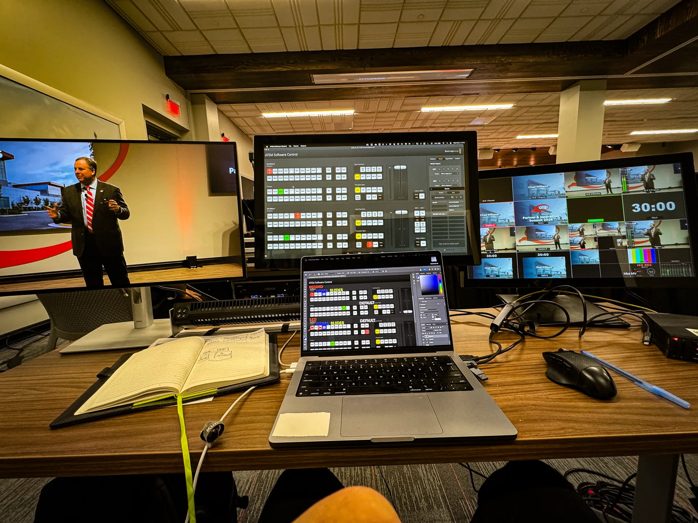
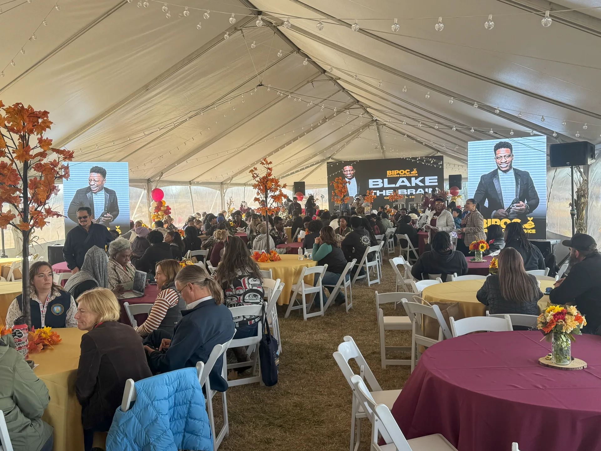
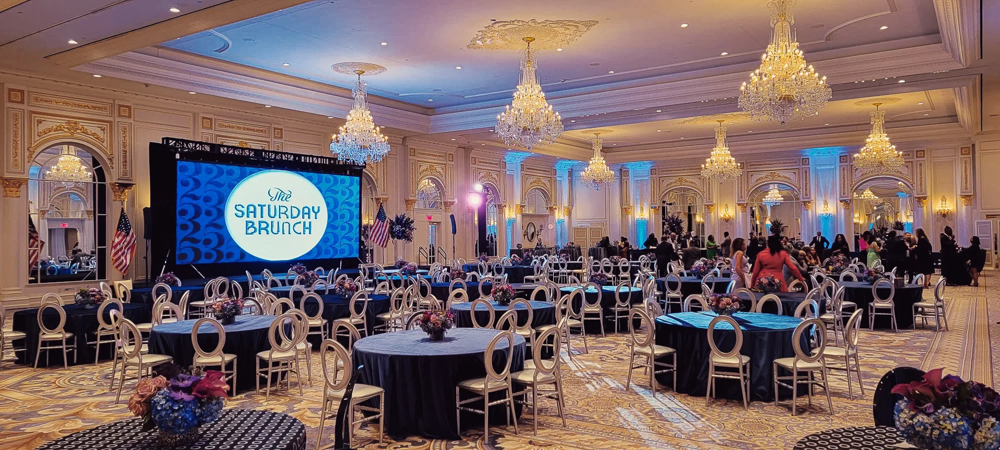

Personal Works · Generative Studies · Autonomous Visuals
Art Gallery
Autonomous visual systems, optical feedback blooms, spatial textures, and cinematic forms crafted for architectural canvas and live space.

Video feedback folded back through mirrored geometry, left to evolve into self-organizing organic structures, captured as a loopable spatial canvas.

Exploration of high-dimensional topological forms synthesized for large-scale immersive projections and dark architecture.

Architectural study of high-contrast volumetric illumination slicing through dark space.